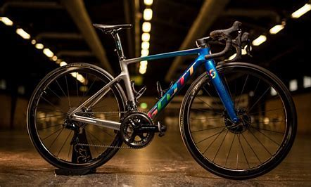

You are working at a bike-share company in Chicago. The director of marketing believes the company’s future success depends on maximizing the number of annual memberships. Therefore, your team wants to understand how casual riders and annual members use Cyclistic bikes differently. From these insights, your team will design a new marketing strategy to convert casual riders into annual members. But first, Cyclistic executives must approve your recommendations, so they must be backed up with compelling data insights and professional data visualizations.

Data Correlation of Movie Dataset in Python. Your company want to produce a film but not sure what lead to successful films. Your Boss asks you to analyze the movie industry and see what films were successful in revenue and why some were not. As a Data analyze you will analyze the dataset you were given and made a report with visualizations and analysis of your data.
These are the projects that I use tableau to display certain visualizations that I couldn't use with other programs. I made the dashboard of my Covid Data
The Covid-19 impacting many lives during the Pandemic. You want to know how many people affected were affected by this virus and how many deaths occuring during this time. As a Data Analyst you will be analyzing which countries had a highest death count and which the least. So you can follow the countries which had the least deaths help you improve your strategy in figuring how to control your deaths

We created a database for the organization Whole Food Markets.Whole Foods Market is a natural supermarket chain, it has 500 stores in North America and the company employs roughly, 95,000 people.Our goal for our database is to track customers purchase history. Is to see what products sells the most and which product need to be placed different in the store. That people see it more so they will buy it. Also able to track how the Whole Food sales are doing and if they are need improving.
A company has hired you to do data analysis on their firm.Your company wants you to do a analyze on how the products that you are selling. The company has set stores in different location around the U.S and want to know what location make the most amount of the dollars and the least. Which month produce the biggest and sales.